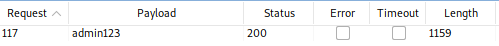

Task 4 Who broke my lock?!
Question #1: Bruteforce the Administrator account's password!
First we intercept the login request in Burpsuite again and forward it to the intruder:

We add a new payload marker in the password field.
Next we configure the payload by loading the best1050.txt file from Seclists. Then we start the attack and filter for successful response codes

We can see that the password ‘admin123’ worked.
Answer: c2110d06dc6f81c67cd8099ff0ba601241f1ac0e
Question #2: Reset Jim's password!
Jim appears to be a Star Trek fan. Googling ‘Jim Star Trek’ presents us with results for James T. Kirk. This character has an older Brother ‘George Samuel Kirk’. Therefore the answer to Jim's security question is ‘Samuel’
Answer: 094fbc9b48e525150ba97d05b942bbf114987257